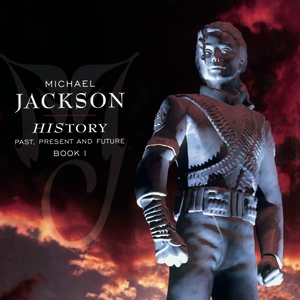

在過去的幾個月中，有人問“他到哪裡去了？”現在人們說“哦，他又回來了。”但我得承認，當我被看作一個普通人而非一個名人的時候，我感覺更加快樂。因為我沒有閱讀過所有關於我的文章，我也不清楚這個世界原來一直都把我看得如此古怪離奇。但如果你有和我一樣的成長經歷的話，如果你從5歲起就一直在億萬人的關注下成長的話，你自然就會與眾不同。在過去幾周裡，我淨化自己，浴火重生。就像又擁有了一個純淨的靈魂。 我根本都沒有童年。沒有聖誕節，沒有生日。那不是一個正常的童年，也沒有童年可以享受到的任何快樂--取而代之的是辛勤工作、奮鬥和痛苦，最終換取了物質和事業上的成功。但是我付出了沉重的代價，因為我再也不能重塑這段人生。然而今天，當我創作我的音樂時，我覺得自己就是上帝的樂器。我在想當我們敞開心扉，盡情揮灑我們的天賦時，那便是怎樣的一種喜悅啊！那經上帝審核過的樂曲，在空中飄盪，讓整個世界都充溢著神奇。我們也在一瞬之中瞥見了生活樂趣，心中滿是奇蹟。 這就是我愛孩子的原因，從他們身上我也學到了很多。我也意識到了當今世界上存在的很多問題 ：從都市犯罪到大規模的戰爭和恐怖襲擊，以及我們過度擁擠的監獄，都是因為那些人有著一個不快樂的童年。孩子心中的魔法、奇蹟、神秘和天真是創造力的源泉，這可以拯救世界。我真的這麼認為。 我們需要學習的，我們需要從孩子身上學習的不是那份孩子氣。在和他們的交往中，我們學到的是生活的大智和真諦。他們知道解決問題的方法正在自己的心中醞釀。今天，我要感謝世界上所有的兒童，包括那些殘疾的和缺乏教育的孩子們，我對你們的痛苦真的感同身受。
Name |
Year |
Album |
|---|---|---|
off the world |
1979 |

|
bad |
1987 |

|
dangerous |
1991 |

|
thriller |
1982 |

|
history |
1995 |
 |
xscape |
2014 |

|